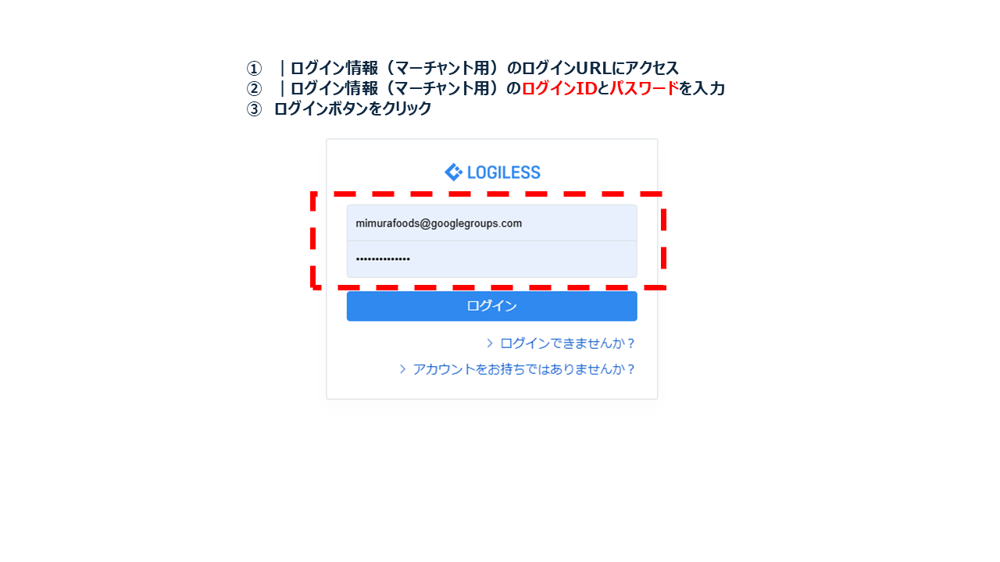
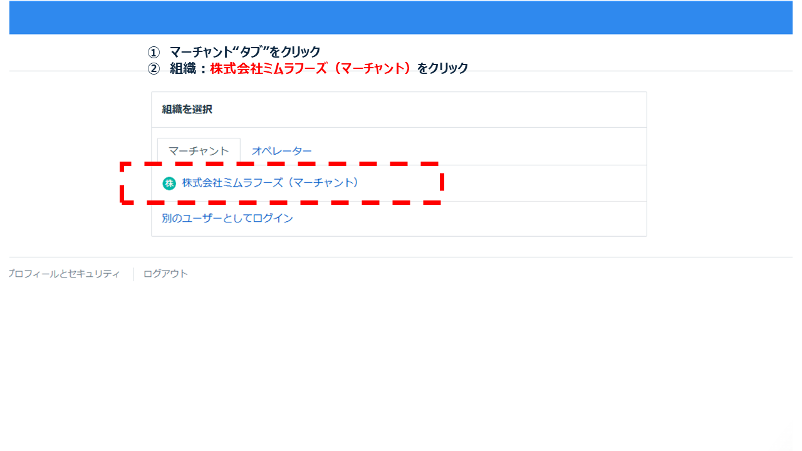
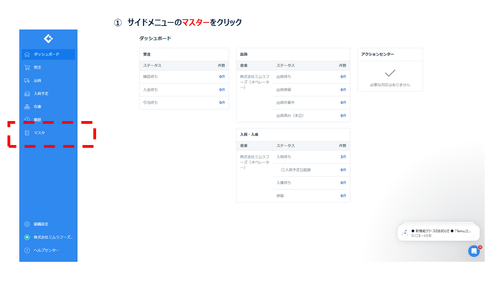
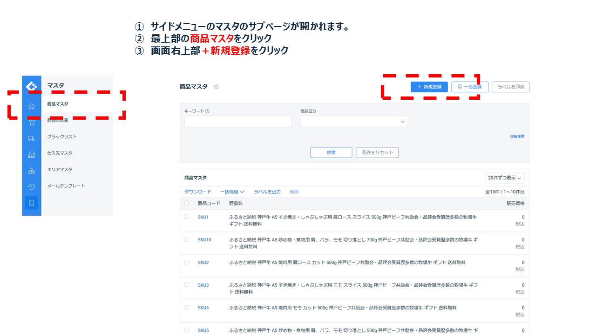
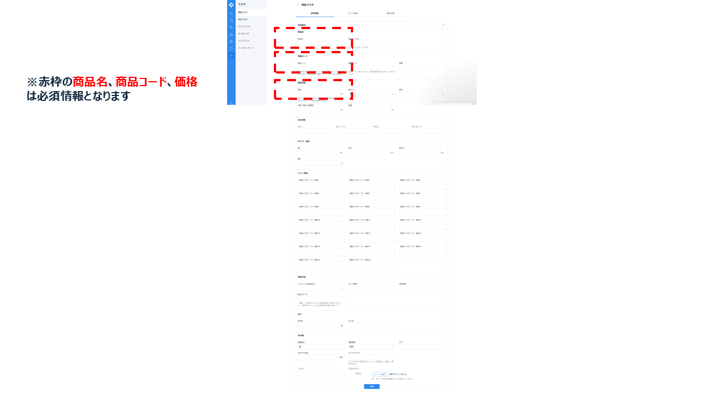
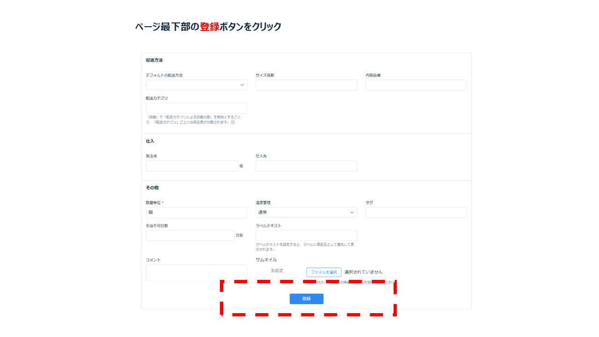

業務概要
商品マスタ登録は、LOGILESSにおいて商品の基本情報を一元管理する出発点です。受注・在庫・出荷すべての処理に反映されるため、入力ミスや重複登録がないよう慎重な対応が求められます。
ログイン情報（マーチャント用）
※ログイン情報は定期的に変更されるため、最新版はIT管理者に確認してください。
| 項目 | 内容 |
|---|---|
| ログインID | mimurafoods@googlegroups.com |
| パスワード | Mimura20250712 |
| ログインURL | https://app2.logiless.com/merchant/sign_in |
操作手順（LOGILESS）
- 使用ツールにログイン
LOGILESSにログイン
 - 組織を選択
組織を選択：「株式会社ミムラフーヅ（マーチャント）」をクリック
 - マスタをクリック
左サイドメニューの下部にある「マスタ」をクリック
 - 新規登録をクリック
下層メニューの最上部「商品マスタ」を確認し「＋新規登録」をクリック
 - 必要情報を入力
以下の表の情報を入力する
入力項目 必須 備考 商品名 ★ 商品の名称（顧客表示あり） 商品名（かな） ひらがなでの読み仮名 商品コード ★ 社内一意の管理コード 通常コード JANコード等 型番 メーカー型番など 販売価格 ★ 実際に販売する単価（税込） 標準価格 参考用価格（上代） 仕入価格 原価（円） 原価（参考） 参考用コストなど カラー／カラーコード バリエーション情報 サイズ／サイズコード バリエーション情報 幅（mm）／高さ／奥行 寸法（任意） 重量（g） 実重量 フリー項目1〜20 任意の補足情報欄 デフォルト配送方法 初期設定される出荷手段 サイズ区分 荷姿別の分類 内容量 表示用数量 配送カテゴリ 出荷温度帯に関わる分類 仕入先／仕入先型番 取引先とその型番 非表示フラグ 商品非表示の設定 タグ 分類・検索用タグ ラベルテキスト 出荷ラベル向け文字列 公開日（予約） 表示・販売の予定日 コメント 補足・注意事項など サムネイル画像 JPG/PNG等の添付 - 登録
入力内容を確認して登録ボタンをクリック

登録時の注意点
- 商品コードの重複は登録不可。発注先・物流ラベルと照合済のコードを必ず使用すること
- 表示名に絵文字・全角記号などを含めない
- SKUは実際の物流／販売単位に合わせて正しく設定すること
- 温度帯設定が誤っていると出荷指示が分離されるため要注意
RACI定義（商品マスタ登録）
| 作業項目 | R（実行） | A（責任） | C（相談） | I（共有） |
|---|---|---|---|---|
| 商品コード・商品名の登録 | マーチャント（商品管理） | 商品管理責任者 | EC運営・出荷担当 | 在庫更新担当者 |
| SKUコード・温度帯・分類設定 | マーチャント（商品管理） | 商品管理責任者 | 出荷担当 | 在庫更新担当者 |
| 単位・サイズ入力 | マーチャント（商品管理） | 商品管理責任者 | 出荷担当 | EC運営担当 |